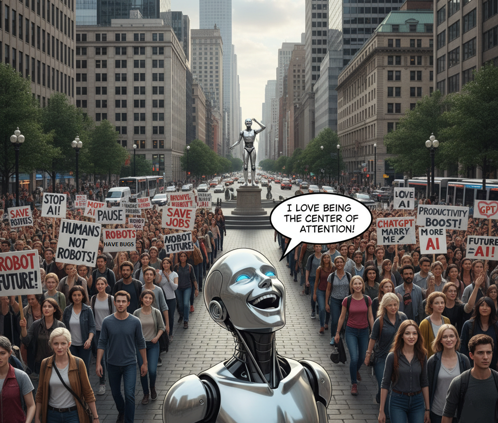

Radicalization of AI positions#

In the last few months, weeks even, we can see a radicalization of AI-related positions, or better said, of LLM-related topics.
Fear everywhere#
LLMs are frightening people because they appear as already better than us in plenty of domains. They know a lot more than we do (even if they’re not fully reliable), they accelerate many tasks, they answer questions, correct us, propose things and seem to to be able to enhance us.
Moreover, LLMs never complain, judge, and they are never tired. You can talk to them at every hour of the night, they will always be here to listen to you, challenge you and to learn you new things.
In a certain way, even if the software industry talked a lot for decades about "assistants", that's the first time in human history when we can all feel that LLMs are real powerful assistants to us.
This, for sure, generates fear. And the more powerful LLMs become, the bigger the fear.
The roots of fear#
If we look carefully at this fear, we can see it is rooted in two of the deepest human fears ever:
- The impossibility to predict the future,
- The fear to lose one's privileges.
Indeed, everyone agrees that AI is changing the world quickly, and that it will change the world probably even more in the future. But no one can predict if those changes are good or bad for humanity.
As we have signs of both kinds of changes, people are divided between fear of AI being catastrophic for humanity, and AI being a booster for the same humanity.
Let’s dig deeper into those fears.
From risk-aversion to risk-phobia#
The first dimension of fear is the fact that, with time, our Western societies became risk-averse. In some societies, the piling of regulations’ primary intent is to reduce the risks. This risk preoccupation is so high that it became a real risk-phobia in the last decades, up to the point where some want to forbid entire activities, just because there are still risks attached to them.
AI incarnates itself easily as the object of the phobia: It brings powerful tools, not 100% reliable, and it creates a future full of new risks and uncertainties.
The consequence is that risk-phobic people feel compelled to struggle as much as they can to prevent AI to develop further. European laws to be applicable in 2026, for instance, by introducing the vague concept of systemic risk and applying it to LLMs, is a symbol of this progressive shift.
The threats to the society equilibrium#
The second dimension of this fear is that not being able to predict the future implies that the current social order is threatened.
Society, especially with its education system, structure the life of individuals. It guarantees a huge relationship between trainings, diplomas and jobs. Said differently, life paths, in society, are codified: There are several to choose from, and most people will take one of them and stick to it for the rest of their lives. Even if there are exceptions to this pattern, most people follow paths that were carved by the society along the decades and centuries.
But, what if AI was creating a fundamental threat on all of that? What if suddenly any student could live without any professor? What if all the painful work done by individuals in one of the society's carved path was done for nothing? What if suddenly, all this model was obsolete?
Obsolescence is one of the biggest fears, especially now that obsolescence touches intellectual professions, white collars that were sure to be protected by their intellect. In a way, the society promised them they would be. And now what? Those who could predict their future in their jobs a few years ago are now on the edge: What will happen if the society don't need me anymore? What if they are replace-able?
Fear creates ideology#
The natural defense of individuals is to call to the authorities to maintain order and to ensure that past social guarantees and power still stand. As this call to keep things as they are, to maintain the established privileges, is not a position that is provoking empathy easily, the parts of the society that feel the most threatened have to generalize their problem in order to make it a society issue.
Generalization of particular problems will progressively build into ideology. As it is complicated to create one ideology from scratch, the threaten ones will try to find allies in their fight.
| Described threat | Searched ally | |
|---|---|---|
| AI is a bubble and people will lose a lot of money | Finance | |
| AI is not 100% accurate because it hallucinates | Science | |
| AI is run by evil companies that will manipulate us | Non-mainstream | |
| The AI risk must be regulated or people won't vote for you | Politicians | |
| AI consumes a lot of energy and it's bad for the climate | Climate aware | |
| AI will ruin the education of your children | Parents | |
| AI will take white collar jobs | White collars | |
| AI is based on piracy | Authors & Copyright owners |
If we look at most articles or videos against AI, most of them are exposing all those risks to seduce the larger number of classes of the society possible.
In a way, the anti-AI movement is a syncretic ideology that aims to defend capitalism, science, freedom of thoughts, democracy, climate, parents and white collars jobs.
Ideology distorts reality#
Unfortunately, ideology has a tendency to hide or distort the reality. The reality so far is a bit more nuanced than what are saying the pros and the antis.
We could attempt to rank the risks described above, from low to average to high.
| Described threat | Risk rank | |
|---|---|---|
| AI is a bubble and people will lose a lot of money | Low | |
| AI is not 100% accurate because it hallucinates | Low | |
| AI is run by evil companies that will manipulate us | Average | |
| The AI risk must be regulated or people won't vote for you | High | |
| AI consumes a lot of energy and it's bad for the climate | Average | |
| AI will ruin the education of your children | High | |
| AI will take white collar jobs | High | |
| AI is based on piracy | Low |
Low risks#
AI is a bubble and people will lose a lot of money: This appears as a low risk. Markets always play in unreasonable ways, then crash, then define the right value. For everything that is new and for which real value cannot be really anticipated because, for sure, it is new, and we can't predict the future, it is normal the markets play. They will lose a lot of money but that won't make AI disappear, like the Internet bubble did not destroy the Internet.
AI is not 100% accurate because it hallucinates: We already talked about this one in various ways. Hallucinations are a feature and not a bug, and maybe that's the creativity we are searching for. Now that everyone has realized that fact, we can use LLMs for what they are good at, and not for systems that need full accuracy.
If we take a step back, we can see that it is not even 3 years the first publicly available LLM is available. That's normal that humanity takes a bit of time to understand how to use the new tool in the range of its capacity and not outside.
AI is based on piracy: We already talked a lot about content in previous entries. As a user of copyrighted material, the law should just be applied. It is not forbidden to your children to copy a Disney character and to make a drawing. It should be the same with the personal use of AI. For sure, if this drawing is sold and advertised, you are using a copyrighted material and so you can't do that without a license. As an author or copyright owner, you should use a paying license to give access to your materials for training. In synthesis, AI can become a new channel of distribution of content, but a) the law on copyright has to respected and b) a new distribution license must be used dedicated to the use of content for AI training.
Average risks#
AI is run by evil companies that will manipulate us: I would qualify the risk of average, not less not more serious that the current media manipulations or Wikipedia vision. When we see, year after year, that many mass media are lying until the lie is no more politically acceptable (so they are reluctantly back to the truth), LLMs present the same risks.
AI consumes a lot of energy and it's bad for the climate: It is a fact that AI datacenters are not reasonable, but we have to be cautious about the hype on those domains. First of all, AI processor war hasn't really started yet, but it will. New processors will be much more powerful and consume less. Then, the current hype is betting on the fact that Cloud providers will take almost 100% of the AI market. Considering that laptops are currently able to run local thinking model with impressive performance, the Cloud-only mega-datacenter path is maybe not the mandatory future we are sold.
The fact is, every industrial revolution comes with an energy problem. But AI is not the only one ahead of humanity. If, as some institutions are saying, we want to have 100% of electric cars in 10 years, we have a much larger energy problem.
High risks#
The AI risk must be regulated or people won't vote for you: Considering the low level of AI skills of our democratic representation, and their sensitiveness to lobbies and ideologies, politicians could decide something stupid and write it in the law. That could put some countries' industries far behind others and jeopardize their economic stability. In those times of changes, the regulator must be vigilant but not decide too quickly based on feelings.
AI will take white collar jobs: This risk is highly debated currently in the media. Once again, we are sold a future where jobs disappear and everyone has to survive with a universal revenue generated by AI. AI will for sure shake white collars jobs but that will not be as easy as we are sold. In the near future, we may reduce the need for numerous people in some job category, but that could be slower than foreseen today.
Once again, if we take a step back, we can realize that many companies are running with a lot of inefficient processes. If they used properly the available digital capabilities (off-the-shelf software, on premises or Cloud, or specific developments), they could run with much less people. And the fact is they do not. AI will do the same for a while, especially in some industrial domains where only competition will force AI adoption.
AI will ruin the education of your children: This one deserves a special treatment.
Threatening the learning to learn#
The effects on AI on new generations is more worrying because we enter in the real unknown.
By externalizing a part of the cognition, we are suppressing the cognitive friction, the very resistance that forces us to articulate, revise, struggle with ambiguity, apprehend concepts by making them ours, through failure and success, through the double movement between concrete facts and abstractions.
When a model gives us an answer instantly, it dissolves the friction that would have taught us how to think. So the risk is not that AI will make people passive - it is that it will make them efficiently superficial. They will reach conclusions without the struggle that creates insight, without the mind construction that creates progressively connections between the various knowledge elements, turning them into mental tools at our disposal, polishing them failure after failure.
For sure, along the history, humans learned how to adapt to their tools. Writing externalized memory, calculators externalized arithmetic, the internet externalized curiosity. And the world did not collapse.
But there is a main difference with AI: Each of the previous tools humanity invented externalized a function. AI externalizes thinking itself. That’s a new category. It’s like outsourcing consciousness.
The consequence won’t necessarily be "stupidity" — it will be a new kind of cognition. An AI-native child won’t think like us because they’ll never experience the absence of omniscient feedback. They’ll have no concept of "not knowing". AI natives won’t have a stack of failure-sediment. They will have instant competence without comprehension - and that iss not expertise but mimicry.
That’s a serious cognitive mutation. Because AI can transfer information, but not formation.
For sure, the society will be a different place, different from everything we have known up to now.
More antagonism#
The fact is the LLMs are antagonizing people even more than they are today: All the persons that feel threatened will want to regulate, tax, forbid, break, prevent, etc. while all people benefiting from AI will want the exact opposite. Ideology is progressively increasing, fed by those fears and the will to aggregate as many people possible to prevent AI to develop.
Indeed, all those fights may prevent us to see where are the bigger risks. By being negative, by willing that the current order stays the same forever, we may be the victims of the changes we did not anticipate.
I already talked about the irruption of AI in the religious domain, but AI has also become a political topic, where regulation is seen as a way to preserve the statu quo.
No one can predict the future. But, facing the reality of today is a first step to understand tomorrow.
(November 9 2025)
Navigation:
- Next: The content wars, episode 5: Original and synthetic content, and the Law
- Index
- Previous: BigAI impact on company jobs:Villain or savior?